Simulado 1
Ponto de partida
Para medir onde você está logo no início e ajustar o estudo para a prova de 21/03/2027.
Na compra
Material independente, sem vínculo com a Prefeitura de Campinas nem com a Vunesp.

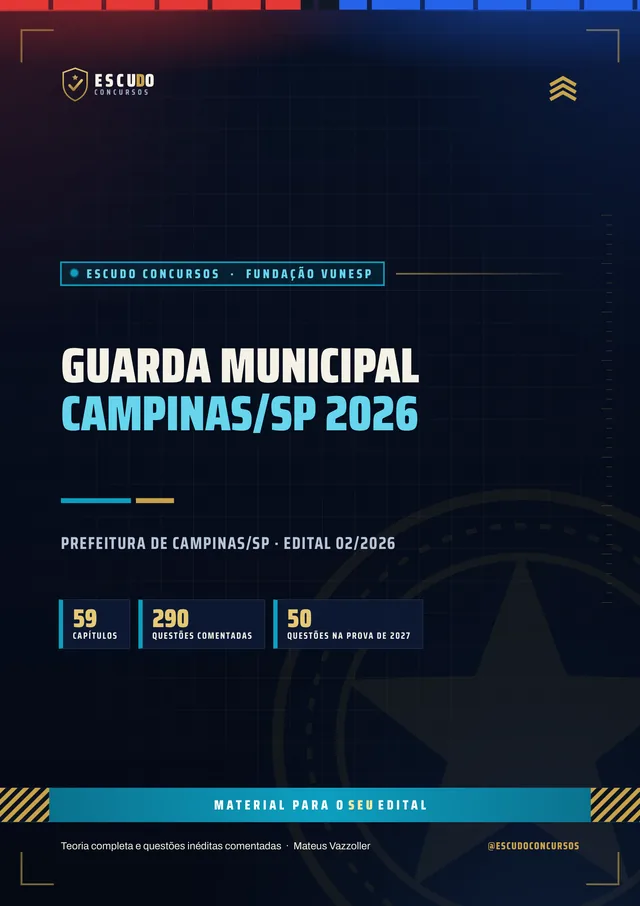
290questões
comentadas
ConcursoGM Campinas2026 · Vunesp
Briefing
Edital aberto: o curso está de acordo com o Edital nº 02/2026 da Prefeitura de Campinas (Fundação Vunesp), com 100 vagas, inscrições de 25/11/2026 a 08/01/2027 e prova prevista para 21/03/2027. Programa item por item (Anexo I), legislação vigente em 11/11/2026 (data de publicação do edital) e questões de 5 alternativas com gabarito comentado.
De acordo com o Edital nº 02/2026 · Vunesp
de R$ 47 por 21% OFF
R$37
com o cupom GMC37 até 31/12/2026. Pelo botão, o cupom já vai preenchido.
R$47
Curso completo, com acesso imediato.
Terreno
O concurso
O Edital nº 02/2026 da Prefeitura Municipal de Campinas foi publicado em 11 de novembro de 2026. São 100 vagas de Guarda Municipal 3ª Classe (ensino médio completo, CNH categoria B no mínimo e idade de 18 a 35 anos no último dia de inscrição), com vencimento-base de R$ 3.796,61 mais vantagens, banca Fundação Vunesp e taxa de inscrição de R$ 67,90, com pagamento até 11 de janeiro de 2027. A prova objetiva está prevista para 21 de março de 2027, com início às 13h.
A objetiva tem 50 questões de múltipla escolha, de (A) a (E), de 1 ponto cada, em 3 horas. Habilita quem fizer no mínimo 50% dos pontos e ficar entre os 1.750 mais bem classificados, distribuídos pelas listas de vagas. Não há redação.
| Bloco | Disciplinas | Questões |
|---|---|---|
| Gerais | Língua Portuguesa | 12 |
| Gerais | Matemática e Raciocínio Lógico | 6 |
| Gerais | Legislação Municipal: Estatuto dos Servidores de Campinas e Avaliação Probatória | 2 |
| Específicos | Aspectos Geográficos e Urbanos de Campinas e Legislação: Estatuto Geral das Guardas, ECA, Estatuto da Pessoa Idosa, Código Penal, Maria da Penha, Direitos Humanos, trânsito, Susp, processo penal e outras leis do Anexo I | 30 |
| Total da prova objetiva: 3 horas. Habilitação: 50% dos pontos e posição dentro do corte de 1.750 classificados. | 50 |
Atualização
Programa do Anexo I
A geografia de Campinas, que o material genérico não traz: Região Metropolitana, municípios limítrofes, zonas e regiões, distritos e principais próprios públicos da cidade, escritos a partir de fontes oficiais.
Legislação municipal pelo recorte do edital: o Estatuto dos Servidores de Campinas (Lei Municipal 1.399/1955, art. 15 e arts. 184 a 204) e a Avaliação Probatória (Decreto Municipal 21.019/2020).
Erro de digitação do edital já corrigido: o programa cita a "Lei 1.869/2019", que é a Lei 13.869/2019 (abuso de autoridade), e o curso traz a lei certa.
Protocolo
O formato
Você estuda lendo, no seu ritmo, pela área de membros da Hotmart ou com os arquivos baixados. O curso segue o programa do Edital nº 02/2026 da Prefeitura de Campinas, disciplina por disciplina, com a legislação federal, estadual e municipal conferida no texto oficial vigente em 11/11/2026, data de publicação do edital. Se a Vunesp ou a Prefeitura publicar retificação, o curso é ajustado.
Reconhecimento
Páginas reais do PDF
Toque numa página para ver em tamanho maior.
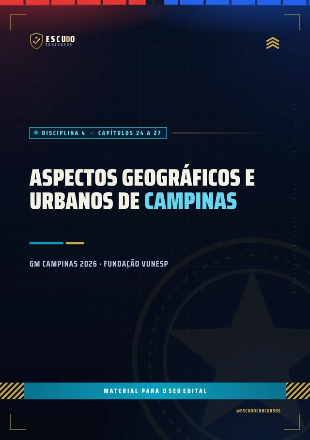
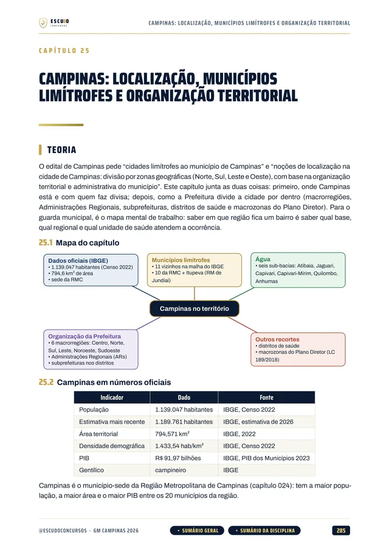
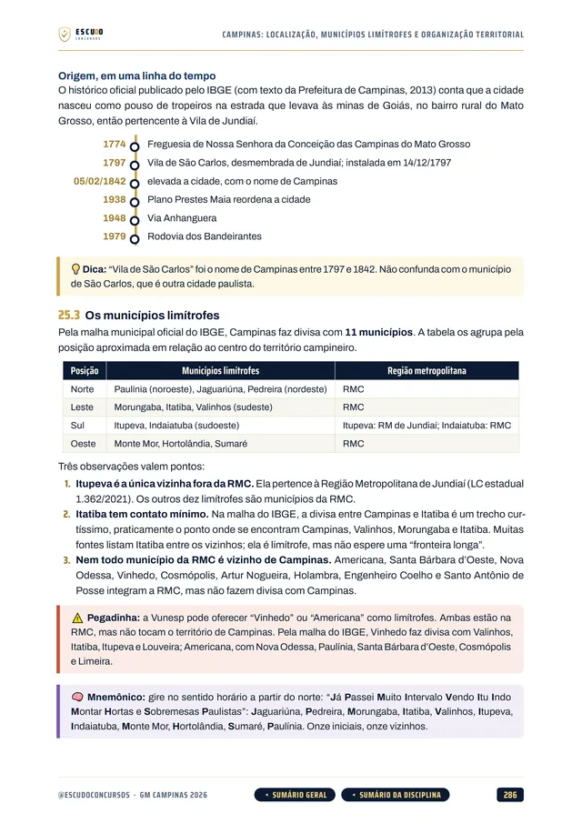
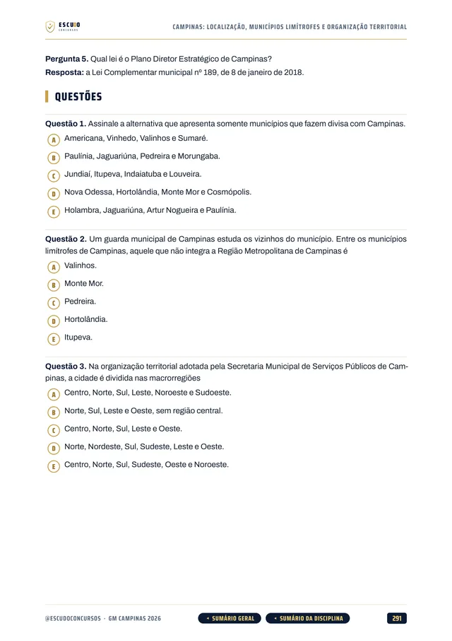
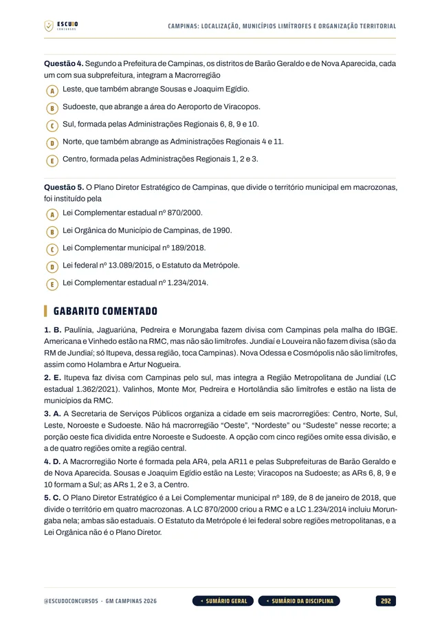
100% em PDF · Garantia de 7 dias · Pagamento pela Hotmart
Equipamento
O que você recebe
Curso em PDF organizado em módulos pelas disciplinas do edital, com 752 páginas no padrão visual ESCUDO, para ler no computador, no tablet, no celular ou no app da Hotmart. Não há videoaulas.
59 capítulos cobrindo o programa do Edital nº 02/2026: Língua Portuguesa (9), Matemática e Raciocínio Lógico (11), Legislação Municipal de Campinas (2), Aspectos Geográficos e Urbanos de Campinas (4) e a legislação do cargo (32), mais o capítulo 001, que explica a prova.
290 questões inéditas com 5 alternativas, de (A) a (E), todas com gabarito comentado: por que a correta está correta e onde está o erro de cada uma das outras.
Geografia de Campinas em 4 capítulos: Região Metropolitana, municípios limítrofes, zonas e regiões, distritos e principais próprios públicos, a partir de fontes oficiais.
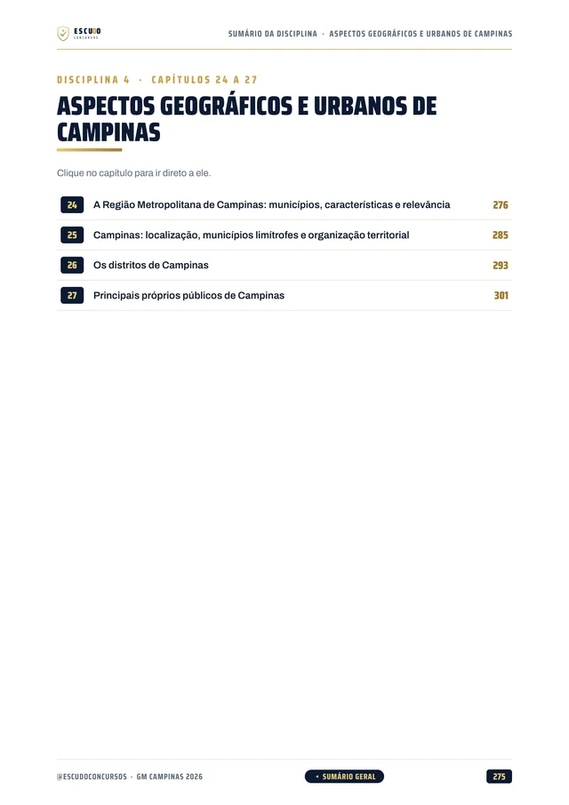
Legislação Municipal em 2 capítulos: Estatuto dos Servidores de Campinas (Lei 1.399/1955) e Avaliação Probatória (Decreto 21.019/2020), nos artigos que o edital pede.
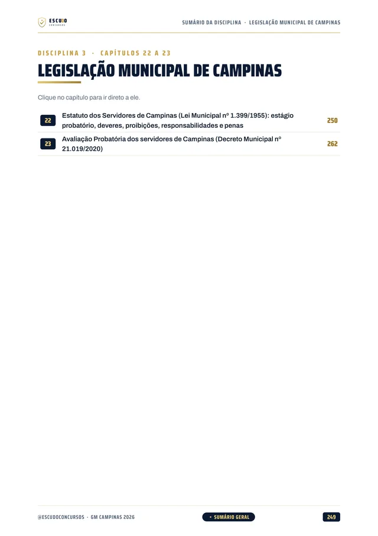
A legislação do cargo em 32 capítulos, com a lei transcrita onde o número decide a questão: Estatuto Geral das Guardas, ECA, Estatuto da Pessoa Idosa, Código Penal, Lei Maria da Penha, Declaração Universal dos Direitos Humanos, Lei Estadual 14.187/2010, Código de Trânsito (8), Susp, crimes ambientais, uso da força, abuso de autoridade, CPP e regulamento de armas.
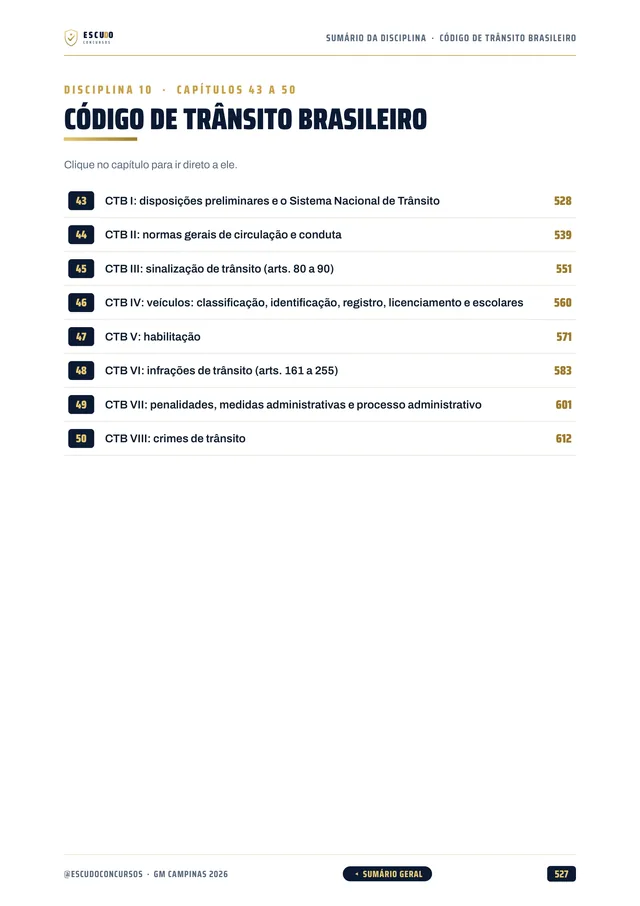
Teoria com recursos para memorizar: mapa de cada capítulo, esquemas, quadros de "pegadinha" e "não confunda", casos práticos do guarda municipal de Campinas, resumo e pontos-chave de revisão.
Navegação clicável: do sumário você vai direto ao capítulo, e volta pelo botão do rodapé.
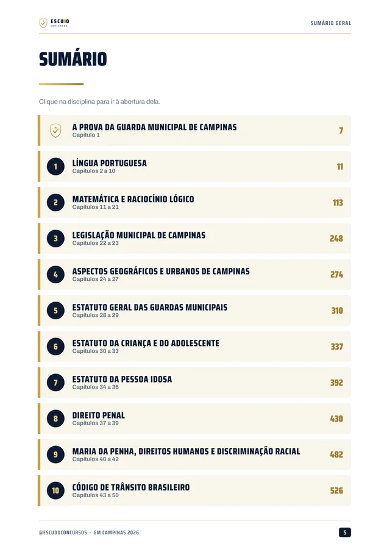
2 simulados inéditos de 50 questões de A a E, na divisão da prova (Português 12, Matemática e Raciocínio Lógico 6, Legislação Municipal 2, Aspectos Geográficos e Urbanos 5 e Legislação 25), cada um com caderno de comentários. O Simulado 1 vem na compra e o Simulado 2 em 14/03/2027, uma semana antes da prova.
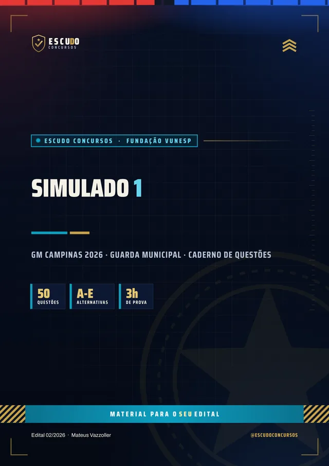
Reforço
Opcional no checkout
Na tela de pagamento da Hotmart você pode juntar, com um clique, materiais extras do mesmo edital. Nenhum é obrigatório: o curso já vem completo.
Revisão Expressa, R$ 17,90: a reta final em 140 páginas, com os quadros "não confunda", a revisão relâmpago e o teste de memória de cada capítulo.
Bateria Extra de 150 questões, R$ 14,90: três vezes a prova, de A a E, na proporção do edital, com gabarito comentado.
Lei Seca do Edital, R$ 12,90: 216 páginas só com a legislação que o edital pede, 18 normas no recorte exato de artigos e os 93 artigos mais cobrados em destaque.
Planilha de Estudos e App, R$ 9,90: planilha em Excel e aplicativo para montar o cronograma até a prova de 21/03/2027 e acompanhar os capítulos estudados.
Plano de ação
Área de membros
| Módulo | Conteúdo | Liberação |
|---|---|---|
| M0 Comece aqui | Apresentação + capítulo 001 (como é a prova e como usar o curso). Bônus: PDF completo para baixar e imprimir | Na compra; o PDF completo no 8º dia |
| M1 Língua Portuguesa | Capítulos 002 a 010 | Na compra |
| M2 Matemática e Raciocínio Lógico | Capítulos 011 a 021 | Na compra |
| M3 Campinas: legislação municipal e geografia | Capítulos 022 a 027 | Na compra |
| M4 Estatuto das Guardas, ECA e Pessoa Idosa | Capítulos 028 a 036 | Na compra |
| M5 Direito Penal, Maria da Penha e Direitos Humanos | Capítulos 037 a 042 | Na compra |
| M6 Código de Trânsito Brasileiro | Capítulos 043 a 050 | Na compra |
| M7 Tributos, segurança pública e processo penal | Capítulos 051 a 059 | Na compra |
| M8 Simulado 1 | 50 questões, caderno de comentários | Na compra |
| M9 Simulado 2 | 50 questões, caderno de comentários | 14/03/2027 |
Treinamento
Treino no formato da prova
Cada simulado tem 50 questões de A a E, na divisão da prova (Português 12, Matemática e Raciocínio Lógico 6, Legislação Municipal 2, Aspectos Geográficos e Urbanos 5 e Legislação 25), com caderno de comentários. A prova não tem redação.
Simulado 1
Para medir onde você está logo no início e ajustar o estudo para a prova de 21/03/2027.
Na compra
Simulado 2
Para conferir a evolução na semana da prova, uma semana antes do dia 21/03/2027.
14/03/2027
Perfil
Para quem é
Para quem vai prestar o concurso de Guarda Municipal de Campinas e quer começar agora, pelo programa do edital aberto, com a Língua Portuguesa, a Matemática, a legislação do cargo e a geografia da cidade cobertas por inteiro.
Proteção
Você tem 7 dias de garantia pela Hotmart. Se não for o que você esperava, pede o reembolso pela própria Hotmart, dentro do prazo.
Cronograma
Sem surpresa na área de membros
Na compra: todas as disciplinas em PDF, uma por módulo, com a teoria e as questões comentadas. É o curso inteiro, para começar a estudar no mesmo dia.
8 dias após a compra: o PDF completo para imprimir. É o mesmo conteúdo dos módulos num arquivo só, liberado depois da garantia de 7 dias.
Simulado 1: na compra, para medir onde você está logo no início do estudo.
Simulado 2: em 14/03/2027, 7 dias antes da prova, para o último teste.
O PDF completo e os simulados aparecem bloqueados na área de membros até a data de cada um: não é conteúdo faltando, é a liberação programada.
Instrução
Dúvidas
Não. É um curso 100% em PDF: teoria, questões comentadas e simulados para ler e resolver.
O acesso é imediato depois da confirmação do pagamento, pela área de membros da Hotmart (web ou app). O PDF completo para baixar e imprimir é liberado no 8º dia.
O Simulado 1 é liberado na compra e o Simulado 2 em 14/03/2027, uma semana antes da prova.
Sim. O Edital nº 02/2026 da Prefeitura Municipal de Campinas foi publicado em 11/11/2026. As inscrições vão de 25/11/2026 a 08/01/2027 e a prova objetiva está prevista para 21/03/2027. O curso foi feito de acordo com ele. Se a Vunesp ou a Prefeitura publicar retificação, o curso é ajustado.
Ensino médio completo, CNH categoria B no mínimo, altura mínima de 1,60 m para homens e de 1,55 m para mulheres e idade de 18 a 35 anos no último dia de inscrição. São 100 vagas de Guarda Municipal 3ª Classe, com vencimento-base de R$ 3.796,61 mais vantagens, e a taxa de inscrição é de R$ 67,90.
Pelo edital: 50 questões de múltipla escolha com cinco alternativas, de (A) a (E), de 1 ponto cada, em 3 horas: Língua Portuguesa 12, Matemática e Raciocínio Lógico 6, Legislação Municipal 2 e 30 de Conhecimentos Específicos (Aspectos Geográficos e Urbanos de Campinas e Legislação). Não há redação. Habilita quem fizer no mínimo 50% dos pontos e ficar dentro do corte de 1.750 classificados. As questões do curso seguem esse formato.
Sim. São 4 capítulos sobre a Região Metropolitana, os municípios limítrofes, as zonas e regiões, os distritos e os principais próprios públicos da cidade, escritos a partir de fontes oficiais, porque o edital cobra esse tema e o material genérico não traz.
São materiais extras e opcionais do mesmo edital: a Revisão Expressa (R$ 17,90), a Bateria Extra de 150 questões (R$ 14,90), a Lei Seca do Edital (R$ 12,90) e a Planilha de Estudos com o App (R$ 9,90). O curso de R$ 47 já vem completo sem eles.
Não. As 290 questões de treino e as dos simulados são inéditas, escritas no formato do edital a partir do programa.
Você tem 7 dias de garantia pela Hotmart. Se não for o que você esperava, pede o reembolso.
Missão
GM Campinas 2026 · Guarda Municipal
de R$ 47 por 21% OFF
R$37
com o cupom GMC37 até 31/12/2026.
R$47
Curso completo, com acesso imediato.
Material para o SEU edital. ESCUDO Concursos.
Continue estudando